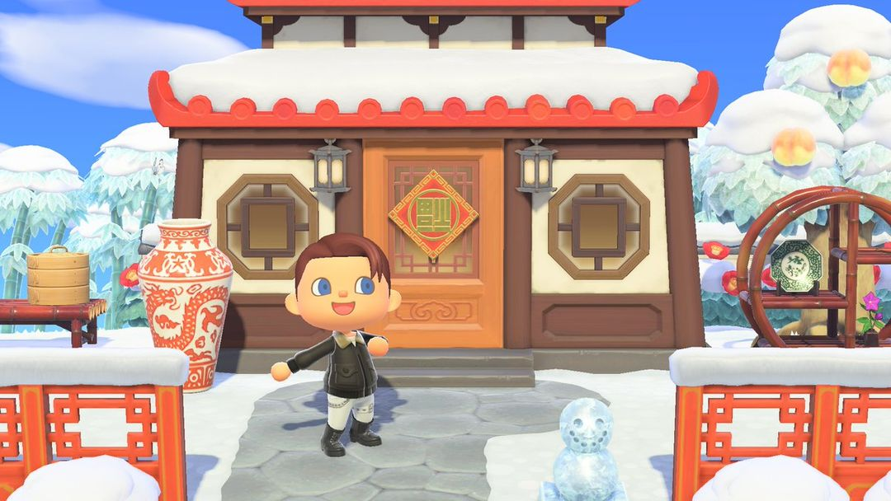
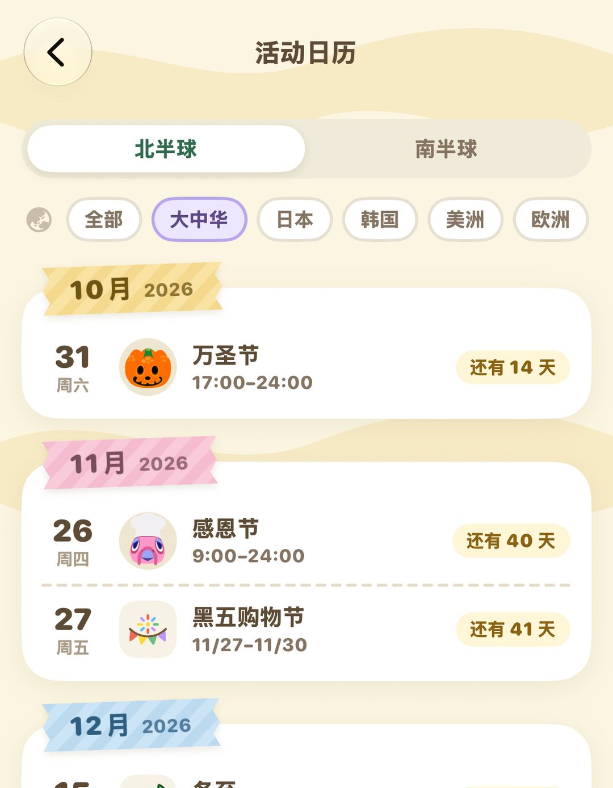

Holiday items: what Nook Shopping sells all year round
Lunar New Year, the Dragon Boat Festival, Moon-Viewing Day, and other smaller holidays — limited-time furniture from the Nook Stop
Big holidays like Halloween and Toy Day get a full-blown event on your island. But the game also has more than forty smaller holidays tucked away: Lunar New Year, the Dragon Boat Festival, Cowherd & Weaver Girl Day, Moon-Viewing Day, plus Valentine's Day, π Day, and Day of the Dead. Nothing happens on your island for these. Instead, Nook Shopping puts one or two related items up for a limited time. They're only on sale for a few days a year, and if you miss them, you'll have to wait until next year.
Fortunately, they're easy to buy: open Nook Shopping on the Nook Stop in Resident Services, place your order, and it arrives the next day. These items are region-free and go on sale at the same time worldwide, so holidays labeled "Japan" or "Europe" are available to everyone. As for dates, only the summer and winter solstices differ by hemisphere; every other holiday falls on the same day in both. Below, we'll cover how to buy first, then go through the year month by month.
01Where and how to buy
When holiday items go on sale, Nook Shopping will send you a letter to let you know. Once you see it, you're good to order.
Open Nook Shopping on the Nook Stop in Resident Services, and you'll find the limited-time items there.
After you've bought 100 items total from Nook Shopping, the Nook Shopping app shows up on your NookPhone, so you can order from anywhere without making a trip to Resident Services.
Each player can buy up to 5 items a day for themselves, delivered to your mailbox the next day. If a holiday has several items you want, plan to spread your purchases over a few days.
These items are sold worldwide at the same time, regardless of your Switch's region. Labels like "Japan," "Korea," or "Americas" just tell you where the holiday is mainly celebrated — they have nothing to do with whether you can buy the items.
TipLimited-time items you've bought get added to your catalog, so next year you can reorder them straight from the catalog when the dates come around. Out of season, they're marked as seasonal in the catalog and can't be ordered.

The Lunar New Year decoration, available only around Lunar New Year (Image: Nookipedia)
02The holidays, month by month
Holidays with fixed dates are listed with their dates. Ones that follow the lunar calendar or Easter move around every year, so the rough rule is given in parentheses.
| Month | Holidays and items |
| January | Nanakusa Gayu 1/5–7 (nanakusa gayu); Big Game Celebration 1/15–2/15 (cheer megaphones, football rug); Groundhog Day 1/25–2/2 (Resetti model); Setsubun 1/25–2/3 (bean-tossing kit) |
| February | Lunar New Year (lunar calendar; on sale for 8 days starting the day before Lunar New Year's Eve): Lunar New Year decoration, lucky red envelope; Valentine's Day 2/1–14: chocolate heart, heart-shaped bouquet; Carnival of Venice (follows Easter; between January and early March): Venetian carnival mask; Hinamatsuri 2/22–3/3: hinaningyo, blossom lantern |
| March | π Day 3/1–14 (π pie, 314 Bells); Shamrock Day 3/10–17 (shamrock doorplate, rug, and more); April Fools' Day 3/26–4/1 (whoopee cushion) |
| April | Singmogil 4/1–10 (forsythia); Prom 4/1–30 (prom wall, prom flooring, prom sash); Nature Day 4/15–22 (cool globe); Children's Day 4/26–5/5 (carp banner) |
| May | Mother's Day, all month (carnations, thank-you Mom mug); Cheese Rolling (late May; the exact dates vary a little each year) |
| June | Dragon Boat Festival (lunar calendar; 10 days, ending on the 5th day of the 5th lunar month): festival zongzi; International Children's Day 6/1–15: handmade crown, handmade cape; Wedding Season and Father's Day, all month; Northern Hemisphere Summer Solstice 6/15–21 |
| July | Tanabata 7/1–7 (bamboo grass); Le 14 juillet 7/10–20; Marine Day; Cowboy Festival 7/15–8/15 |
| August | Cowherd & Weaver Girl Day (lunar calendar; 10 days, ending on the 7th day of the 7th lunar month): Hikoboshi outfit, Orihime outfit; Obon 8/10–16; Tomato Festival 8/20–31 |
| September | Moon-Viewing Day (lunar calendar; 10 days, ending on the 15th day of the 8th lunar month): dango, moon cakes, moon rug; Chuseok; Grape Harvest Festival, all month |
| Oct.–Nov. | Day of the Dead 10/25–11/3 (marigold decoration); Lantern Festival 11/1–11 (handheld lantern); Shichi-Go-San 11/11–20 (chitose ame) |
| December | Northern Hemisphere Winter Solstice 12/15–22; New Year's Eve 12/22–31 (New Year's noodles, berliner, twelve-grape dish, and more); Shōgatsu 12/22–1/5 (kadomatsu, kagamimochi, zodiac figurine) |
The solstices are flipped in the Southern Hemisphere: there, 6/15–21 is the Winter Solstice and 12/15–22 is the Summer Solstice. The Summer Solstice brings the maypole, sunflower rug, and sunflower sunglasses; the Winter Solstice brings the bathtub with yuzu, tangyuan, and aurora wall (7,000 Bells). Whatever you're after, double-check which hemisphere your island is in before you wait for it.
Moon-Viewing Day items set out in a yard (Image: Nookipedia)
03Lunar New Year and other East Asian holidays
Lunar New Year brings the Lunar New Year decoration and lucky red envelopes. The decoration is 2,000 Bells and gives your front door a festive touch; the lucky red envelope is 500 Bells and lets you tuck Bells inside to give to someone. On the day itself, Isabelle mentions it in the morning announcement, and your villagers will chat with you about the new year.
The Dragon Boat Festival brings festival zongzi for 1,000 Bells.
Cowherd & Weaver Girl Day brings the Hikoboshi outfit and Orihime outfit, 2,500 Bells each — perfect for matching with a friend.
Moon-Viewing Day brings dango and moon cakes at 1,100 Bells each, plus the moon rug for 2,000 Bells. The picture above shows these items set out in a yard.
The Winter Solstice brings tangyuan for 1,000 Bells.
Shōgatsu brings a new zodiac figurine every year for 1,600 Bells. It's on sale from December 22 to January 5 each year, and it's always the animal for the coming year. If you want to collect all twelve, don't forget to order one during that window every year.
Heads upNook Shopping only sells the current year's zodiac figurine, and you can only order it from the catalog during that window. If you missed one, you can have Katrina cleanse your bad luck on Harv's Island (10,000 Bells), and you might get a zodiac figurine in the mail the next day.
04Two in the fall
Day of the Dead runs from October 25 to November 3 every year and brings the marigold decoration for 1,600 Bells.
Nook Friday starts on the fourth Friday of November each year and runs through November 30. During those days, everything at Nook's Cranny is 30% off. It overlaps with the Turkey Day items Nook's Cranny sells after Turkey Day, so if you want Turkey Day furniture, buy it during this window to save some Bells.
Also, on Valentine's Day, Isabelle and villagers you're close to will send you letters with a chocolate heart or heart-shaped bouquet attached. If you visit the Roost that day, Brewster serves you hot chocolate.
To see when each holiday starts, Nook Circle's Event Calendar lists them by hemisphere and can also filter by region.

Nook Circle's Event Calendar: pick your hemisphere and region to see upcoming holidays with a countdown
05Version history
Adding limited-time items to the catalog, Nook Friday, and the Roost's Valentine's Day hot chocolate all came with 2.0.
Nook Circle · Search "Nook Circle" on the App Store